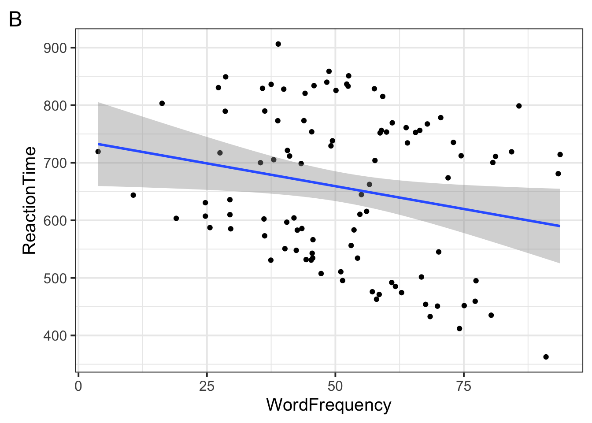
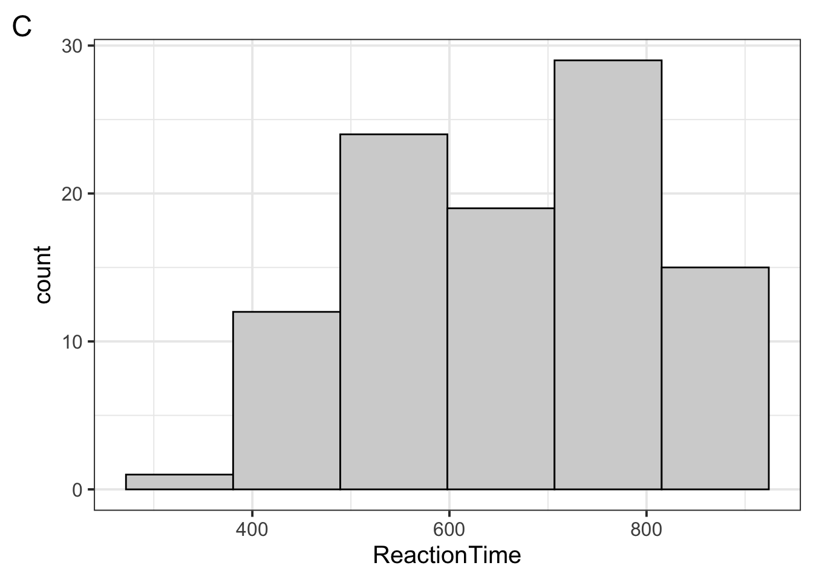
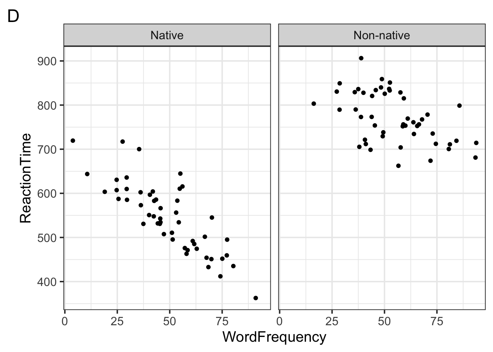
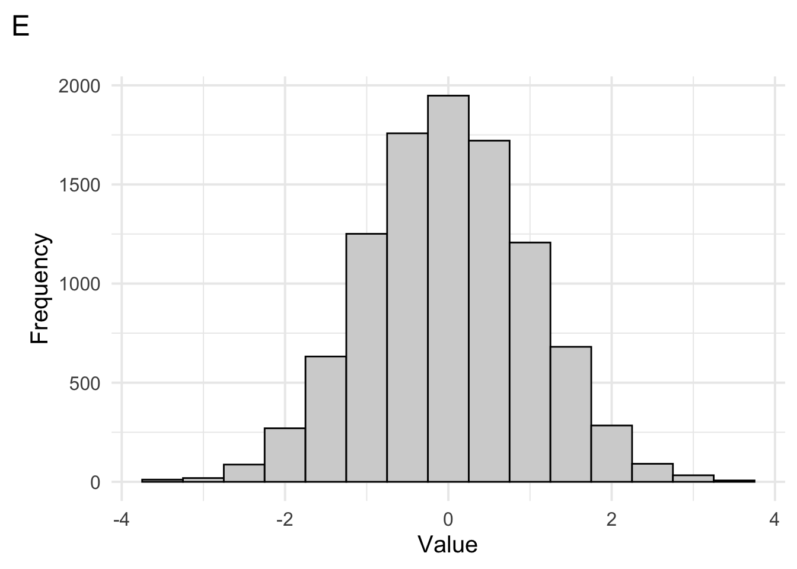
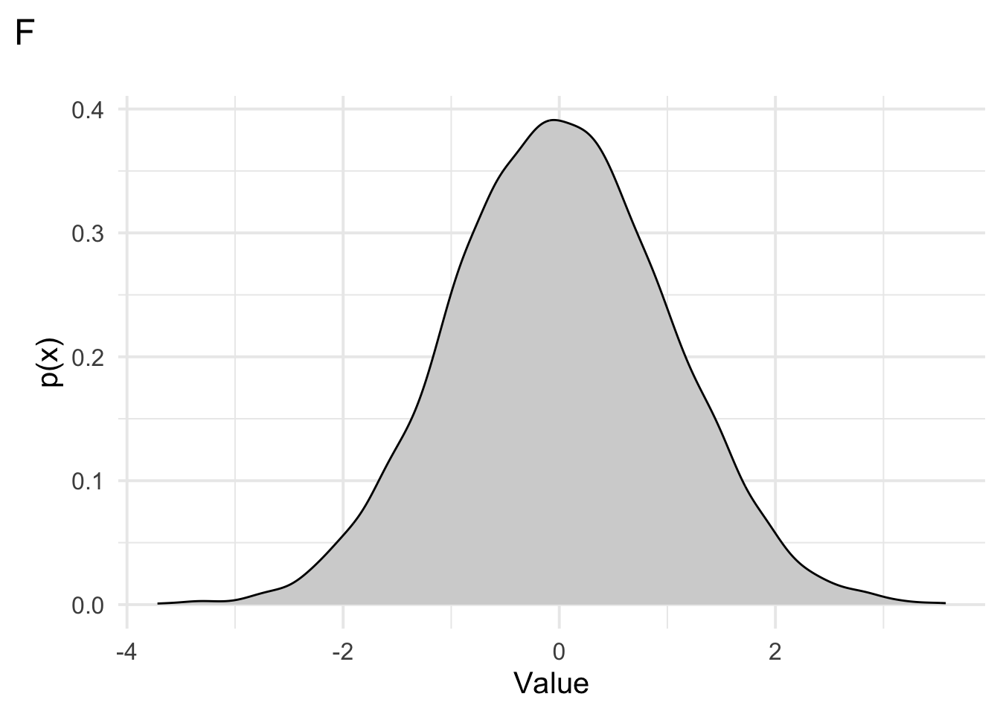
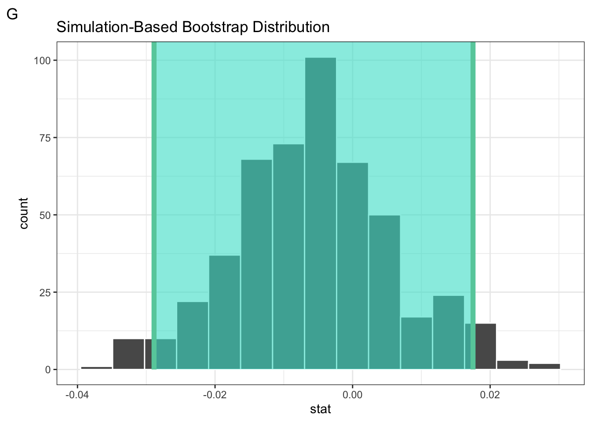
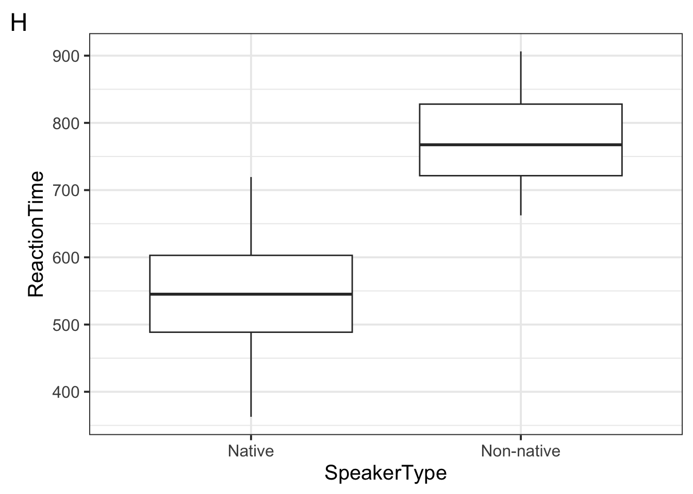
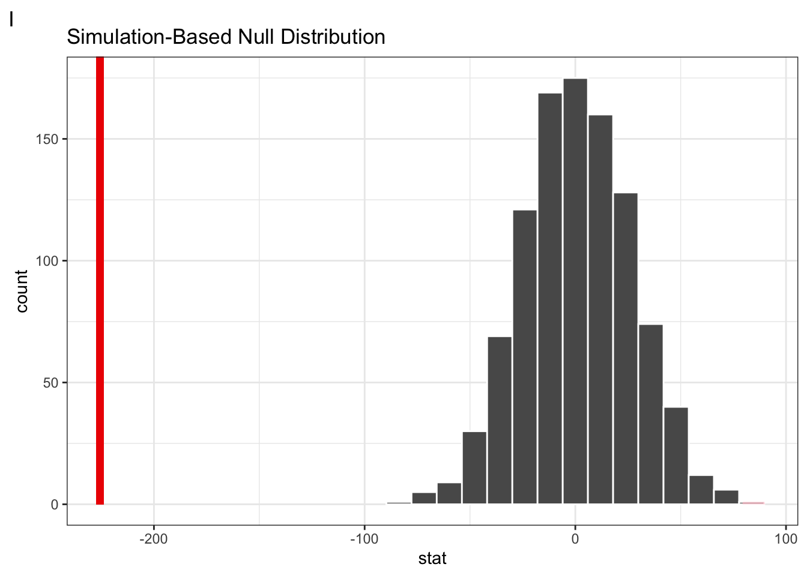

# A tibble: 6 × 3
WordFrequency ReactionTime SpeakerType
<dbl> <dbl> <chr>
1 38.8 773. Non-native
2 45.4 754. Non-native
3 81.2 711. Non-native
4 51.4 495. Native
5 52.6 851. Non-native
6 84.3 719. Non-native Exam 1
Data Science for Studying Language & the Mind
Instructions
The exam is worth 100 points. You have 1 hour and 30 minutes to complete the exam.
- The exam is closed book/note/computer/phone except for the provided reference sheets
- If you need to use the restroom, leave your exam and phone with the TAs
- If you finish early, you may turn in your exam and leave early
(5 points) Preliminary questions
Please complete these questions before the exam begins.
(1 point) What is your full name?
(1 point) What is your penn ID number?
(1 point) What is your lab section TA’s name?
(1 point) Who is sitting to your left?
(1 point) Who is sitting to your right?
1. (6 points) R basics: general
(2 points) Which of the following are expressions? Choose all that apply.
(2 points) Which of the following occur in the code block below? Choose all that apply
x <- sum(c(5, 3))(2 points) What additional step do we need to take to start a new R notebook in Google Colab with
File > New notebook? Choose one.
2. (16 points) R basics: vectors, operations, subsetting
(3 points) Use the
seq()function to write an expression that would return the vector100 200 300 400 500and store it asmy_vector(2 points) Suppose you run the following code. What will
typeof(x)return and why? Choose one.x <- c(30, 40, 50, "sixty", 70, 80)(2 points) What will the following code block return? Choose one.
x <- 50:60 typeof(x)(3 points) Suppose you run the following code. What will be returned? Choose one.
c(1, 2, 3) * c(1, 2, 3)
(2 points) Suppose you run the following code. What will
x[c(2,4)]return? Write your answer in the box below and show your work.x <- seq(1, 10, by = 2)(2 points) In R, how are complex objects like matrices or arrays built? Choose one.
(2 points) Suppose we run the following code. What will
is.na(x)return? Choose one.x <- c("apple", NA, "na", "orange")
3. (14 points) Data visualization: basics
Suppose we measure the reaction times (in milliseconds) of both native and non-native speakers as they process words of varying frequency (measured as occurrences per million words). We store these data in a tibble called rt_by_speaker. The first 6 rows of this tibble are printed below for your reference.
Suppose we run the following code to visualize the data.
ggplot(
rt_by_speaker,
aes(x = WordFrequency, y = ReactionTime, color = SpeakerType)
) +
geom_point(color = "black") +
geom_smooth(method = "lm")(2 points) Which of the following plots will be returned? Choose one.


(2 points) In the code above, which of the following correctly describes which aesthetics are mapped and which are set? Choose one.
(2 points) In the code above, which of the following correctly describes which aesthetics are global and which are local? Choose one.
(2 points) When
ggplot2maps a categorical variable to an aesthetic, it automatically assigns a unique value of the aesthetic to each level of the variable. True or false, this process is called scaling.
(6 points) Suppose we wanted to plot a histogram of the
ReactionTimevariable in thert_by_speakerdataset. Fill in the blanks below such that plot C is returned.____a____ %>% ggplot(aes( ____b____ = ReactionTime) ) + geom_histogram( fill = "lightgray", color = "black", bins = _____c______ )
- (2 points) Fill in blank a.
- (2 points) Fill in blank b.
- (2 points) Fill in blank c.
4. (8 points) Data visualization: layers

(2 points) Which of the following layers must be present in the code that generated plot D above? Choose one.
(2 points) In plot D above, which of the folowing layers could be added to change the y-axis label to
RT? Choose one.
(2 points) In plot D above, which of the following aesthetics should we set to make the points more transparent? Choose one.
(2 points) Plot D above makes use of
theme_minimal(), one of R’s built-in themes. Which of the following would adjust the size of the font to 15? Choose one.
5. (11 points) Tidy data and importing
(3 points) Fill in the blanks with
cell,column, orrowto describe thetidy dataway of organizing datasets:- Each forms a variable.
- Each forms an observation.
- Each is a single value.
- (1 point) Fill in blank 1.
- (1 point) Fill in blank 2.
- (1 point) Fill in blank 3.
(2 points) True or false, we need to import both
readrand thetidyversein order to import data with theread_*functions.(2 points) Which of the following would convert the dataframe
dfto a tibble? Choose one.
(4 points) Suppose we have a dataset called
my_file.csvthat looks like the following. Fill in the blanks to import the data and ensure R understands the missing values asNA.Name,Class_Year,Favorite_Ice_Cream,GPA Alice,Freshman,Vanilla,3.5 Bob,Sophomore,Chocolate,na Charlie,Junior,Strawberry,3.2 Diana,Senior,Mint,3.9 Eve,Freshman,Cookies and Cream,3.6 Frank,Junior,Rocky Road,n\adata <- ____a____(file = 'my_file.csv', na = _____b_____ )- (2 points) Fill in blank a.
- (2 points) Fill in blank b.
6. (11 points) Data transformation
The following questions refer to our rt_by_speaker dataset introduced in question 3. The first 6 rows of this tibble are printed again here for your reference.
# A tibble: 6 × 3
WordFrequency ReactionTime SpeakerType
<dbl> <dbl> <chr>
1 38.8 773. Non-native
2 45.4 754. Non-native
3 81.2 711. Non-native
4 51.4 495. Native
5 52.6 851. Non-native
6 84.3 719. Non-native (2 points) How would you filter the dataset to keep only
Nativespeakers withReactionTimegreater than 800 ms? Choose one.(3 points) Fill in the blanks to return the median
ReactionTimebySpeakerType?rt_by_speaker %>% group_by(___a____) %>% summarise( n = n(), medianRT = ______b______ )- (1 point) Fill in blank a.
- (2 points) Fill in blank b.
(2 points) Suppose we run the following code block. What will
n()do? Choose one.rt_by_speaker %>% summarise(n = n())(2 points) True or false, the following code blocks are equivalent
# option 1 rt_by_speaker %>% select() %>% glimpse() # option 2 select() %>% rt_by_speaker %>% glimpse()(2 points) Suppose we want to create a new column
ReactionTimeSecondswhich converts every value in theReactionTimecolumn from milliseconds to seconds. Which of the followingdplyrfunctions could accomplish this? Choose one.
7. (18 points) Sampling distribution
Suppose we visualize the frequency distribution of a value in a dataset, shown below.

(2 points) Which of the following could best summarise the spread of these data? Choose all that apply.
(2 points) Which of the following could summarise the central tendency of these data? Choose all that apply.
(2 points) Suppose we visualize the probability density function of the distribuition that generated these data (below) What could be the height of the probability density function at a value of 2? Choose one.

(2 points) True or false, the probability density function shown in plot F is given by the following equation.
\(p(x) = \frac{1}{max - min}\)
(6 points) Suppose we want to generate the bootstrap sampling distribution for the median of
valuein our dataset. Fill in the blanks to accomplish this with theinferpackage, generating 500 bootstrapped samples. Note thatdatahas 10000 rows.library(____a_____) data %>% specify(response = value) %>% generate(reps = _____b_____, type = _____c_____) %>% calculate(stat = _____d_____)- (1 point) Fill in blank a.
- (2 points) Fill in blank b.
- (2 points) Fill in blank c.
- (1 points) Fill in blank d.
(2 points) The shaded area of the figure shows the 95% confidence interval. If we were to decrease the
levelof confidence to 68%, the confidence interval would become (choose one):
(2 points) Which of the following best describes the standard error? Choose one.
8. (11 points) Hypothesis testing
Suppose we want to determine whether there is a difference in mean ReactionTime between our Native and Non-native speakers in the rt_by_speaker dataset. We can visualize these data with a boxplot.

Then we use infer to generate the sampling distribution for the difference in mean ReactionTime between the Native and Non-native speakers. We’ve visualized this distribution here and called shade_p_value() to generate the vertical line.

(3 points) Step 1 of the 3-step hypothesis testing framework is to pose the null hypothesis. State the null hypothesis here in the box below.
(2 points) Step 2 is to ask, if the null hypothesis is true, how likely is our observed pattern of results? Given the figures above, which of the following could be the p-value? Choose one.
(2 points) Step 3 is to decide whether to reject the null hypothesis. True or false, we failed to reject the null hypothesis. Assume our threshold for rejection is p < 0.05.
(2 points) Why do we pose a null hypothesis? Choose one.
(2 points) True or false, we can compute a p-value by counting the number values in our null distribution that are more extreme than the actual observed value and then dividing by the total number of simulations that we generated.